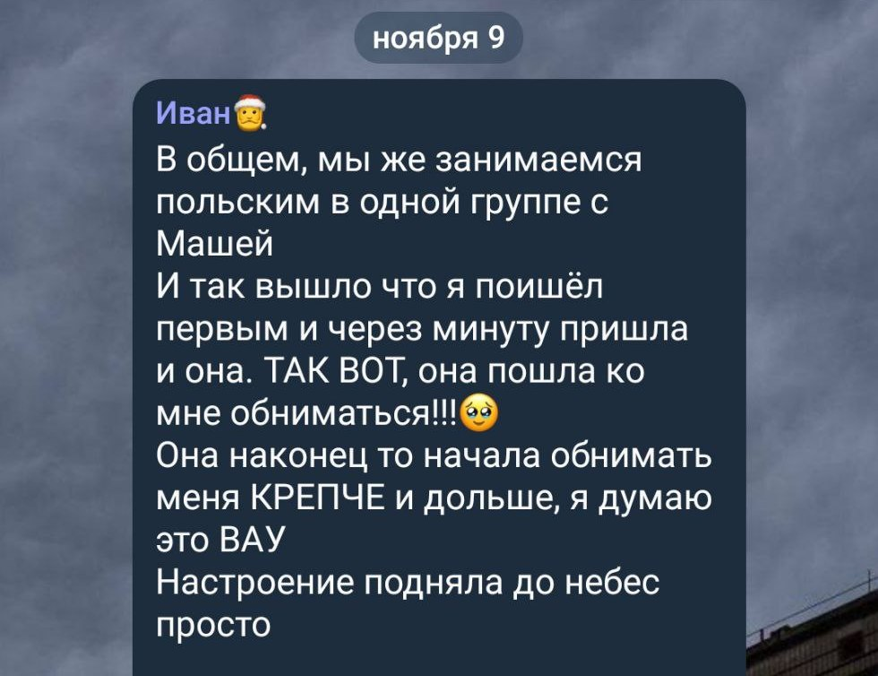
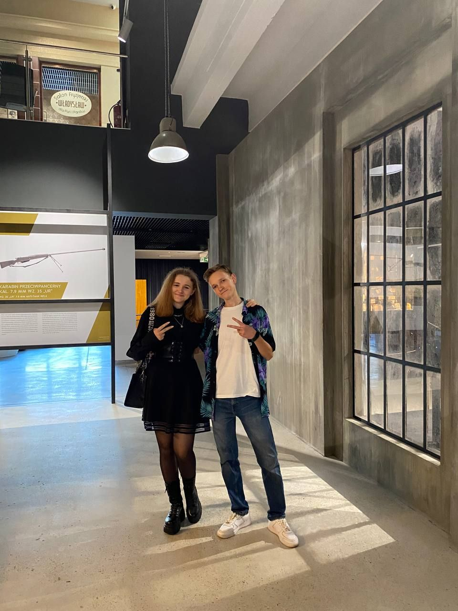
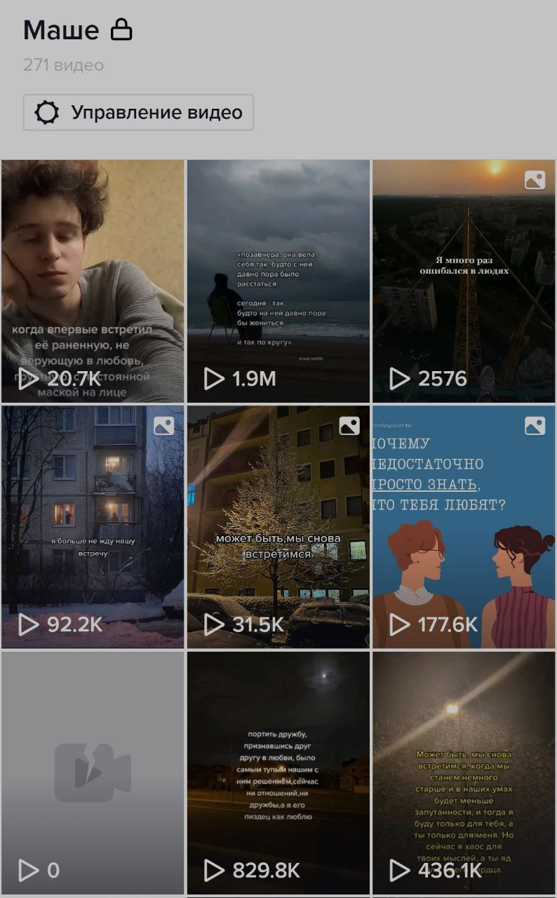

Этот раздел максимально личный и предназначен только для тебя
Это собрание мыслей, чувств, воспоминаний и эмоций
Всё нижесказанное по той или инной причине не было или ЕЩЁ не было сказанно тебе вживую
Полагаю тут будут не только позитив, но и негатив, но в любом случае
Приятного просмотра!
Well... с приходом нового года я решил начать новую главу в наших с тобой отношениях, надеюсь ты поддержишь меня в этом и будешь не
против, а если и будешь против - поговорим и прийдём к компромису
Мне очень нравятся наши с тобой прогулки, безумно. Мне нравиться пересекаться с тобой взглядами, держать тебя за руку
люблю когда ты спонтанно обнимаешь меня и берёшь за руку, нравиться быть с тобой рядом и разговаривать на разные темы.
Люблю когда ты приглашаешь меня гулять
Люблю когда ты делаешь спонтанные комплименты и говоришь всякие милости, может я и не всегда показываю это, но внутри я просто
сгораю, сгораю от чувств и эмоций
Я обожаю когда ты хвалишь меня и говоришь мне приятные вещи,
это по истине поднимает мне настроение!
у меня даже есть отдельный список с твоими фразами которые я запомнил
Я правда обожаю какие-то мелочи по типу обычных приветствий когда мы в компании и пожелания приятного аппетита,
вопросов о том как я и так далее. Это безумно поднимает мне настроение
Я хочу быть с тобой рядом, очень
Быть с тобой рядом так долго как это только будет возможно,
держать тебя за руку, обнимать, быть рядом даже на расстоянии
Заезженная фраза, но я хочу быть с тобой и в горе и в радость
Хочу проходить с тобой твои проблемы и помогать с ними, хочу быть с тобой когда тебе хорошо, когда плохо и когда тебе хочется прыгать от радости
Я хочу чтобы ты улыбалась, мир должен видеть твою потрясающую улыбку намного чаще!
 Мне безумно нравиться наблюдать за твоим талантом
- рисованием
Мне безумно нравиться наблюдать за твоим талантом
- рисованием
По правде говоря, я влюблялся в тебя с каждой секундой всё сильнее в тот самый вечер когда наблюдал за тем, как ты
рисуешь. Ты давала мне возможность попоробовать тоже, правда, это просто безумно.
Безумно наблюдать за тем,
как ты занимаешься любимым делом, это просто прекрасно!
Давай рисовать чаще?

Ликовал когда ты обняла меня перед польским
Спасибо за чай
АААААА как же мне было приятно)))
Наслаждался чаем и вспоминал тебя, большое тебе
за это спасибо!
P.S.:ленточка ещё у меня)
Радовался когда писала во время поездки в варшаву
Спасибо что не раз доверяла мне свои слёзы.
Мне очень нравилось замечать на себе твой взгляд и моменты когда мы смотрели в глаза друг другу
Огромное спасибо что позвала меня провожать твою маму с Вовой, я это очень ценю и мне было безумно приятно
Странно звучит, но благодаря тебе я прошёл все стадии влюблённости
У меня есть песни которые асоциируются с тобой и тем самым вечером:


Увы, их я пока что не слушаю
Мне было очень приятно когда во время первой экскурсии в музее ты предложила сделась совместное фото:


А это был отдельный плейлист у меня в тиктоке для видео которые я хотел тебе отправить)
Я часто не могу тебя понять, разумеется зачастую это связанно с моими ожиданиями, но всё же меня зачастую вгоняют
в раздумия твои действия после которых следуют бездействия. Ты то берёшь меня за руку, то нет,
рассказываешь сколько всего хочешь вместе сделать, выражаешь кучу эмоций, обнимаешь, а потом перестаёшь это делать.
Mне нужна стабильность
Ты всегда останешься человеком научившим меня завязывать галстук
Будь со мной искренней, прошу
Я правда извиняюсь за то, что не всегда мне хватет смелости и возможно уверенности что-то сказать или сделать,
но я работатю над этим и начинаю потихоньку разговоривать, надеюсь дальше будет только лучше
Будь рядом когда мне тяжело и помогай мне, а остальноя я вывезу)
А это обратная сторона медали))


Чтож.. я делал большой перерыв в написании сайта, в районе недели с копейками. Cлишком уж большие перемены
были в моей голове, у нас происходило мало чего приятного, по этому ничего сюда и не писал.
Сегодня я договорился с тобой погулять (чт.15.12.22) и собираюсь поговорить с тобой. По истинне не знаю куда нас это приведёт)((
Возможно всё уже кончено, знаю что заявление слишком громкое, но говорю как есть. Ты слишком переменчивая, Маша.
Я не хочу чтобы так было, это делало мне безумно больно, сейчас мне уже всё равно)))
Вчера вечером ты снова про меня вспомнила и написала мне, закидывала различными вопросами и интересовалась мной.
Мне было уже всё равно, меня больше не торкает. Мне банально мерзко от таких момментов когда ты вспоминаешь обо мне)
При виде сообщений появляется мысль: "Блять Маша, зачем...?"
Ты слишком нестабильная, слишком.
Твои качели меня по настоящему заебали, извини что так говорю, но это правда.
Ты делала мне больно, именно по этому я наконец-то отвязался от тебя и подавил в себе чувства к тебе, такие вот дела.
Наверное я не жалею об этом решении ибо так будет только лучше для меня. А ты за это время могла спокойно разобраться в себе
и определиться чего ты хочешь, а не мучать меня пустыми словами, ложными надеждами и ебаными качелями.
Вот правда кто так делает?) Зачем...?
Ты то появлялась то пропадала. Я терпел и ждал, думал что "Вот-вот всё наладится", но как бы не так)
Ты не менялась, увы.
Понятия не имею к чему приведёт наш разговор.
И этот текс тоже останется в готовом варианте сайта. Практически все слова в этом разделе написаны с искрой в сердце и эти слова не исключение.
Пишу то, что чувствую.
Жалею только о том, что не поговорил с тобой раньше и не начал отвязываться от тебя.
Теперь жизнь кажется по истинне свободной.
Справедливости ради хочется сказать что хорошие моменты тоже были..но
Ты будешь говорить о своих чувствах ко мне, но где они?))
Почему я их не вижу, где постоянность и стабильность, м?)
Было куча возможностей и ситуаций где ты могла их проявить, но почему-то ты забивала хуй и ничего не делала.
Я как буд-то игрушка с которой играются когда становиться скучно. "Блен, чёт скууучно, надо кого-нибудь за руку взять и поговорить...точно у меня же есть Ванечка)"
И то, Маш, ты звала меня на прогулку всего 4(!) раза за всё время, свои разы я считать не буду)
И не дай бог ты будешь что-тоговорить о своих чувствах) Где они?)
Почему ты их не показывала?
"Я думала что тебе не нравиться когда мы выносим наши отношения в обществе потому что я разговаривала с девочками на этаже, и они сказали что они не любят этого делать, по этому решила что у нас такая-же ситуация", а спросить меня об этом?
Справедливости ради стоит сказать что ты и в правду изменилась после нашей пятничной прогулки, но увы тебя хватило ненадолго.
Ты начала больше внимания уделять, писать и спрашивать как я, спасибо тебе за это, я и в правду чувствовал себя счастливее в такие моменты. Ты даже предложила мне погулять.
Но увы во время той прогулки в твоих глазах, речи и поведении не было искры, вот оно.
Иногда ты буквально горишь, а иногда очень холодная.
Но увы всё это продлилось не долго и ты опять начала про меня забывать)
На днях на уроке польского ты сказала что тебе не хватает общения в общаге. Я для тебя какая-то шутка что-ли?)
Если ты ко мне что-то и чувствуешь, то почему не зовёшь гулять, не пишешь и не пытаешься поддержать разговор в переписке?
Воистину не понимаю тебя.
Я намекнул тебе что ты можешь приехать на нг ко мне в Вaршаву, но никакой реакции я не увидел)
Будь я на твоём месте - уже цеплялся бы за каждую возможность провести нг с человеком который мне нравиться.
Я и подумать не мог что такая возможность может стать реальностью.
Может быть в качестве твоего последнего шанса сегодня я предложу тебе провести новый год вместе со мной, но раз нет, - так нет))
Well.. 22.12.22
Мы погуляли, было больно, очень больно, невероятно. Больно осознавать что ты потратил невероятное количество энергии и сил, а так же время в пустую. Разумеется я получил опыт, но об этом позже
Больно осознавать что потратил силы, эмоции, время, переживания, чувства и энергию в пустую. Правда обидно
Из-за тебя я начал усерднее заниматься спортом и думаю это даст плоды, наверноя я благодарен тебе за это. Если бы не спорт - я бы не вывез.
Слишком уж много эмоций и чувст было, в отличии от твоих исключительно эмоций.
Я буду стараться и дальше уничножить какие либо чувства к тебе, пока ты не станешь мне безразлична, если это конечно получиться. Но мне уже легче, это радует.
Я надеялся что после разговора мы прийдём к лучшему финалу, или хотя бы прийдём к компромису. Я наконец-то выскажусь и раскидаю по фактам, но в итоге сломали всё-таки меня)
Ты ужасно поступила, бьюсь об заклад ты даже не понимаешь наскоько ужасно, мерзко, отвратительно и ещё десятки синонимов которыми можно описать твой поступок.
К сожалению я не смог высказать это во время прогулки, был ошеломлён и голова была занята совсем не тем.
Представь что ты сначала влюбляешься в человека, он кажется тебе таким классным, но ты всё-же не решаешь пока-что подойти к нему и познакомиться,
но через пол месяца тебе выпадает такая возможность. Вы списываетесь, начинаете общаться, через пару дней вы встречаетесь на этаже и начинаете долгий 3-х часовой разговор.
Ты понимаешь что этот человек очень похож на тебя, у вас много общего и есть точки соприкосновения. Ты пытаешься писать чаще и всячески поддерживать диалог, но к сожалению редко получаешь отдачу.
И вот, через пару дней, во время пробежки собравшись с мыслями ты предлагаешь пойти этому человеку с тобой погулять и одновременно пофоткаться.
Прогулка проходит отлично, всё было супер, тебе говорят комплементы и предлагают пофотографировать. Ты счастлив что всё наконец-то сдвинулось с мёртвой точки!
Твои фотографии неоднократно хвалят и будут хвалить в будущем. В конце прогулки вы в первый раз обнялись. Потом окажется что этот человек такой же тактильный как и ты.
Ты начинаешь приглашать этого человека гулять чаще, паралельно чувства усиливаются и чувство ревности то закрадываеться, то уходит из твоей головы.
Вы гуляете, ты начинаешь получать много приятных слов в свой адрес, о том какой ты комфортный и тд. этот человек первый кто говорит тебе подобные слова.
Через какие-то время во время прогулки человек предлагает тебе взяться за руки. По началу ты думаешь что это была "одноразовая акция" из-застраха поскольку было темно и в были не в самом приятном месте.
Но затем это повторяется снова, тебе снова берут за руку.
Это был первый шаг и звоночек о чувствах этого человека, как мне тогда казалось.
Но это было только начало) Начало твоих эмоциональных качелей, Маша.
Я доверился тебе, доверил тебе свои чувства, впустил в своё сердце так как думал что ты сделвешь то же самое, но увы
16.01.23
Я в очередной раз пытаюсь переосилить себя и довести всё это до ума, надеюсь это моя последняя попытка) )
Ты заставила меня прочувствовать то, что я не чувствовал уже давно, или вовсе не чувствовал никогда. Заставила почувствовать радость,
восторг, взаимность, боль, непонимание, потерянность, злость, печаль, я засыпал и просыпался с мыслью о тебе, с нетерпением ждал каждой встречи с тобой,
хотел проводить с тобой много времени и быть рядом, хотел радовать тебя, заставлять улыбаться.
Я хороший человек, просто прекрасный. И так говорят абсолютно все люди с которыми я близко знаком, все те, кто меня хорошо знают.
Порой я тот ещё мудак, безусловно. Мне многое нужно в себе изменить, а точнее улучшить. Но в любом случае я заслуживаю намного большего))
Намного большего и лучшего. В очередной раз пообещаю себе никого не искать. Полноценно встать на ноги и снова продолжать борьбу и ждать прихода той самой, которая влюбится в мои уставшие глаза)
Такие вот дела
Во время нашего последнего разговора ты попросила пообещать что наше общение останется прежним. Но я не смогу тебе этого пообещать, к счастью.
Увы.
Думаю ты тоже была дорогим мне человеком и справедливости ради я даже остался тебе очень признателен за некоторые вещи.
Но, что есть то есть)
Всем этим я просто хочу донести до тебя то, насколько ты была неправа. То, насколько твой поступок был ужасным и мерзким.
Я не говорил тебе этого ибо не было возможности, так что может хоть так донесу всю суть, все свои чувства в надежде что ты вынесешь из этого урок и станешь лучше.
Не станешь повторять тех ошибок в будущем, иначе не найдёшь достойного партнёра.
Я надеюсь ты хороший человек, я не горю желанием вымещать на тебя свою злость и прошлые обиды, стараюсь быть хорошим, всё же.
Так что удачи тебе, хули :) И большое спасибо за урок
Естественно я мог бы добавить в этот раздел ещё миллион всяких приятностей, милых мелочей и прочего. Но у меня просто нет ни желания, ни вдохновения...ни опять таки желания:(
Я давно перестал стараться над этим, перестал как то оформлять этот сайт и делать его лучше, просто не вижу в этом смысла.
Сейчас я просто занимаюсь вписыванием текста и загрузкой фотографий в раздел "Фото".
Бля, я так и не попросил тебя почесать мне спинку, курде, досадно
А ещё я постоянно забываю спросить понравилась ли тебе та шоколадка риттер спорт которую я купил в большой бедронке и в последствии подарил тебе в знак благодарности. Была ли она вкусная?

Та самая фраза)) Была написана на утро следующего дня после того как ты её сказала. Это были очень сильные слова которые навсегда останутся там